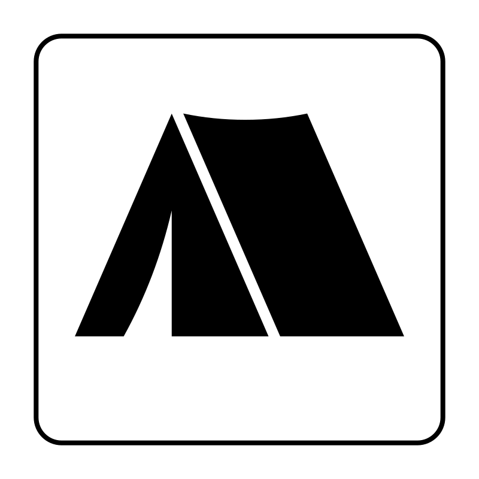

Jasa & Layanan
Kami hadir untuk membantu mempermudah kebutuhan akomodasi pendakianmu menuju Gede Pangrango. Adapun jasa dan layanan yang kami sediakan sebagai berikut.
Penginapan
Tersedia tiga pilihan jenis penginapan yaitu :
- Konsep barak.
- Homestay.
- mini villa
Porter & Guide
Jasa guide dan porter sebagai pemandu pendakian dan distribusi logistik.

Rental Alat
Menyewakan bermacam alat kemping dan pendakian seperti :
- Tenda.
- Sleeping bag.
- dll.
Paket Pendakian
Paket pendakian Gunung Gede Pangrango, akomodasi disiapkan, tinggal berangkat.